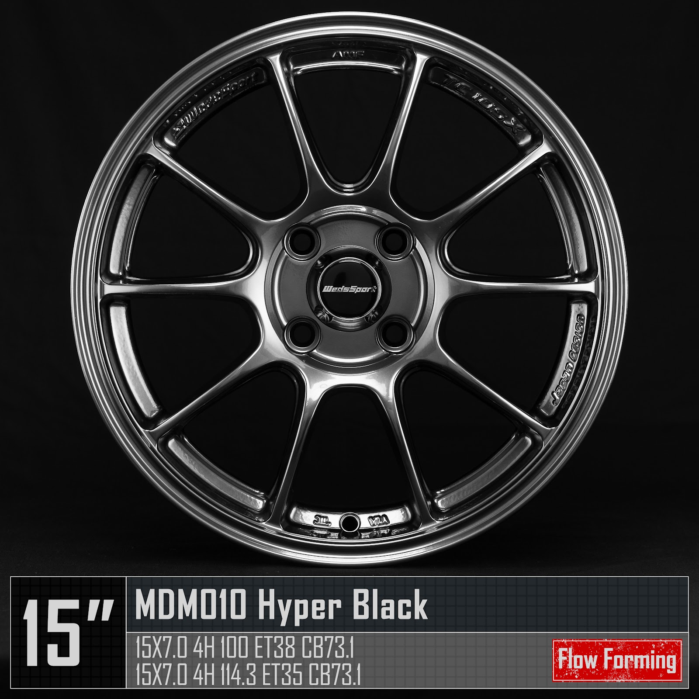

Aftermarket WedsSports TC105X Style (MDM010) 15x7.0J | PCD 4X100 | ET38 | CB73.1 | Hyper Black

RM 750.00
15-inch aftermarket alloy wheel inspired by the Japanese WedsSport TC105X design. Features a sporty 10-spoke design, Hyper Black finish and flow-forming construction. Specifications: • 15x7J – PCD 4x100, ET38, CB73.1 • 15x7J – PCD 4x114.3, ET35, CB73.1 Model Code: MDM010 Note: This is an aftermarket replica-style wheel, not an original Japanese WedsSport product.
Klang Hock Li Tyre Services Sdn Bhd, Klang, Selangor, Malaysia.
View live product details and enquire